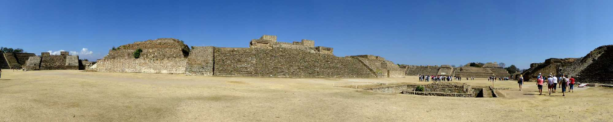
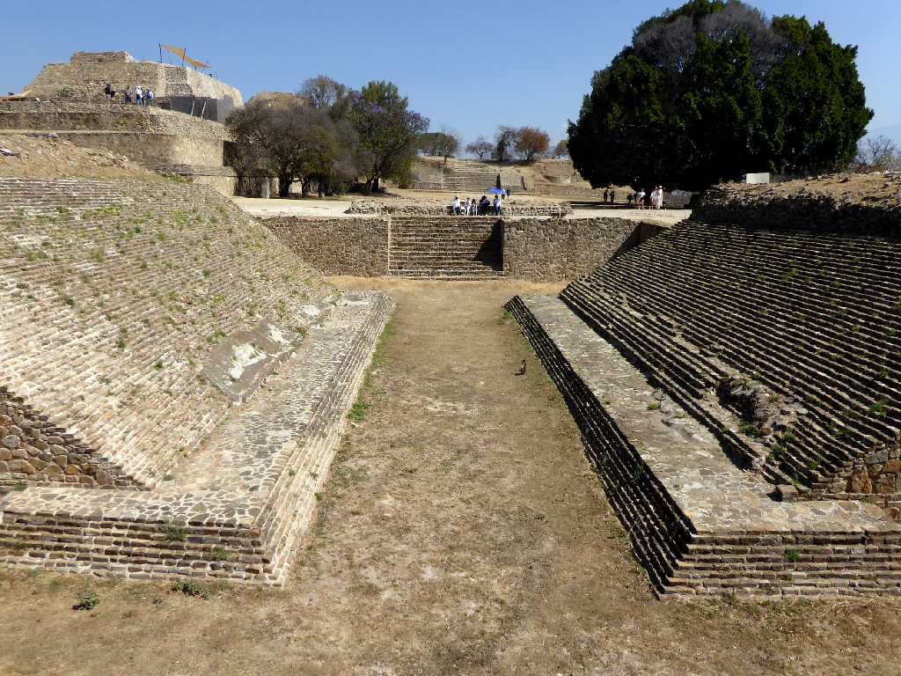
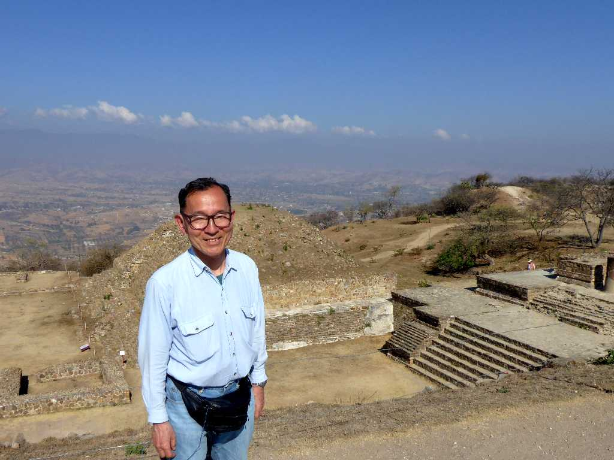

Plaza Central Monte Albán
紀元前５００年から紀元後８００年まで栄えたモンテアルバンはサポテカ文明の中心地で中央広場は祭祀センターとなっている

Altar Gran Templo Plaza Central Monte Albán

Cancha de Juego de Pelota Monte Albán

March 14 2020 Monte Albán

Máscara del Dios Murciélago Monte Albán Museo Nacional de Antropología
サポテカ文明 コウモリ神の仮面 モンテアルバン出土